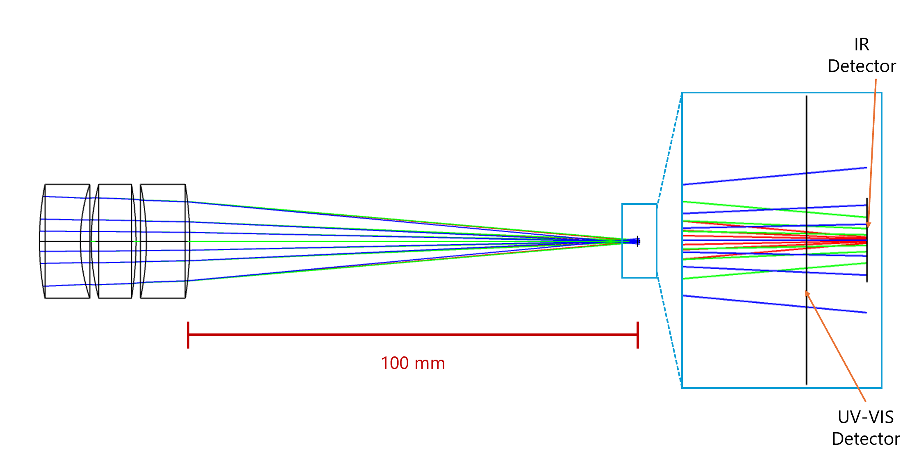
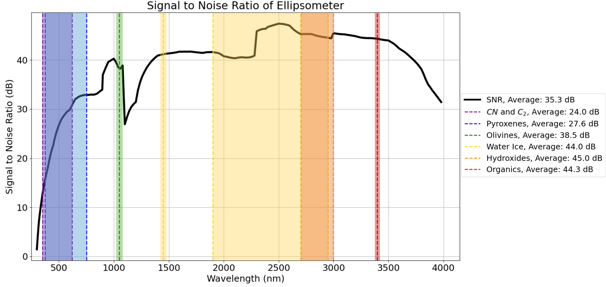

Optical Design
Performed detailed design of the spectropolarimeter, including the spectral and polarimetric components, as well as refocusing elements in Zemax.

End-to-end Simulation
Wrote a simulation in Python that captures the end-to-end performance of the spectroscopic ellipsometer from the light source to the detector. This simulation includes signal-to-noise ratio, spectral resolution, spot size analysis, and polarimetric accuracy.

Calibration
Designed and performed calibration procedures for the instrument, including angular error calibration for polarizer placement.